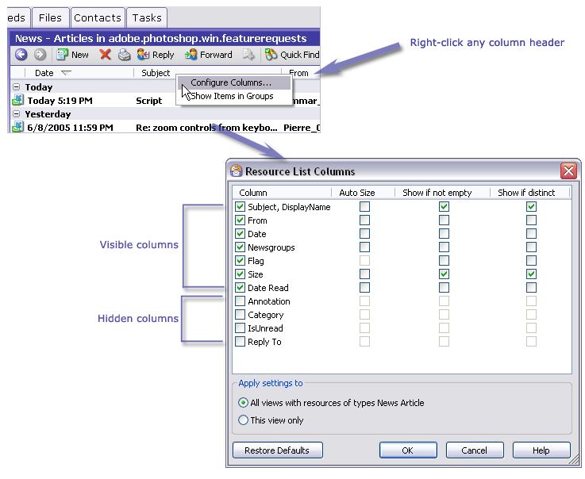
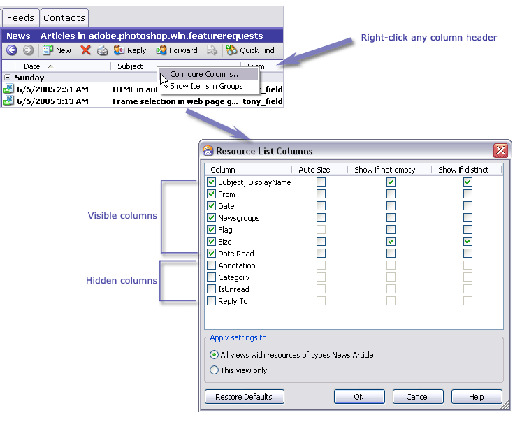
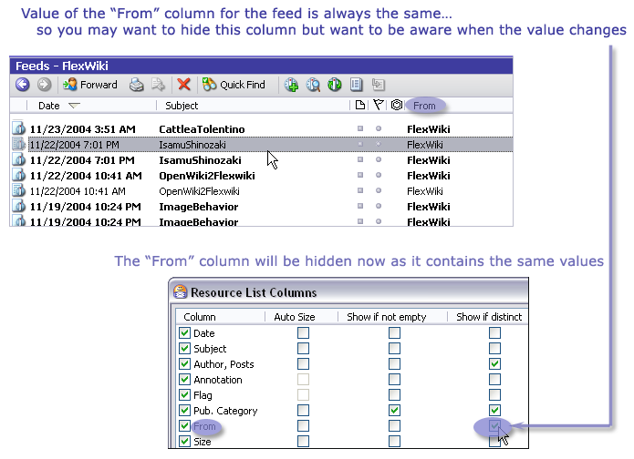

Resource List Columns Dialog
You can access this dialog from the context menu of the column headers in the main window Items List or from the View menu, select Configure Columns…
This dialog enables you to specify which data columns should be displayed in the list of resources shown in the Items List.
The dialog lists the names of the columns that are available for display in the Items List as well as some options of these columns display. The list of columns shown in the dialog varies depending on which product version you have, and which resource tab is selected when you invoke the dialog. Only those columns that pertain to the selected tab appear in the list.
Each available column name has a checkbox beside it. When a column name is checked, the Auto Size, Show if not empty, Show if distinct checkboxes can be edited.


The Resource List Columns dialog
Auto Size
To enable this option, check the box near the column name and then the checkbox corresponding to the column name and the Auto Size column. The width of the columns with this option selected will fit the width of Omea's Item Viewer. Please note that this check box can be disabled for some of columns because their width is sized automatically (for example, Flag and Annotation columns always have the fixed width).
Show if not Empty
The column for which you check this option will be displayed in Omea's Item Viewer only if it contains some value. For example, if you set this option for Annotations column, and you don't have any annotations for the resource in this View you are currently browsing or this type of resource, the Annotation column will be hidden until you decide to annotate some resource of this type or in this View.
Show if Distinct
Some of the resources you can work with in Omea may have the same or different values in some columns. For example, the feeds may have different description in the Pub. Category, same or different posts authors names in the Author, Weblog column and so on. If you don't want to see the values of the fields which contain the information which is always the same, you can turn this option on; the column will be hidden until some different value appears in it (say, a different author posts to the feed).

Example of the Show if distinct option can be useful
Apply Settings to
Defines the scale of applicability of the settings you define in this dialog. You have two options to choose from:
- All Views with Resources of Types — applies settings to all resources of the tab (type of resource) you currently work with
- This View Only — applies settings only to the view you currently work with (for example, the selected newsgroup or feed)
Restore Defaults Button
Clicking the Restore Defaults button reverts the view of columns to the default (application) settings for the type of resource you are currently browsing and changing the columns settings.
If you have defined Custom Properties, their names appear in the list of available columns. For more information, see Showing columns for Custom Properties in the Items List.